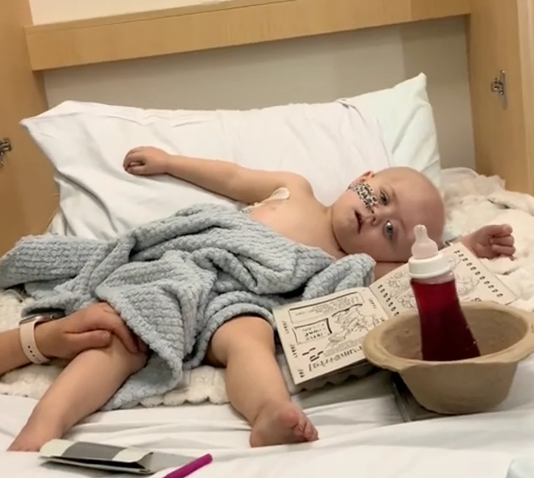

Tiene 5 años y lucha contra un tumor cerebral. Hoy necesita tratamientos médicos para seguir peleando por su vida.
Recaudado $129.446.100
de $205.470.000 estimados para cubrir su trasplante y tratamiento médico.

Tu gesto hoy es un paso más para Carlos.
Hasta hace poco llevaba una vida normal, llena de juegos, risas y momentos simples de la infancia.
Pero hace un tiempo comenzaron a aparecer síntomas preocupantes. Dolores de cabeza muy fuertes, mareos y problemas para caminar hicieron que su familia decidiera llevarlo al hospital para realizar estudios.
Después de varios análisis y consultas médicas, los especialistas dieron un diagnóstico muy difícil: Carlos tiene un tumor cerebral.
Desde ese momento su vida cambió por completo.
Los días que antes estaban llenos de juegos ahora se transformaron en hospitales, estudios médicos y tratamientos constantes.
Hoy Carlos necesita tratamientos especializados, controles médicos permanentes y cuidados intensivos mientras los médicos luchan por tratar la enfermedad.
Su familia está haciendo todo lo posible para acompañarlo en esta batalla, pero los tratamientos y cuidados médicos generan costos muy difíciles de afrontar solos.
Por eso se creó esta campaña.
Los fondos recaudados se transfieren directamente a los padres de Carlos, sin intermediarios. En ningún momento el dinero pasa por cuentas ni por la gestión de la organización Tu Granito Ayuda.
Al momento de realizar la donación se informa claramente el titular de la cuenta y su vínculo con Carlos, para que cada persona que colabora sepa exactamente a quién está ayudando.
Este mecanismo busca garantizar transparencia, trazabilidad y confianza, asegurando que cada aporte llegue directamente a la familia que atraviesa esta situación. 💙
Podés colaborar por transferencia.
Titular de la cuenta: Alexis Ivan Brizuela (Hermano de Carlos)
* Usá el botón "Copiar" para pegar los datos en tu app bancaria.
Estos son costos aproximados del proceso médico:
Actualizaremos estos valores a medida que avance el plan médico
Carlos es un niño de 5 años que fue diagnosticado con un tumor cerebral, una enfermedad que requiere tratamiento médico intensivo y seguimiento constante.
Carlos se encuentra en tratamiento médico intensivo. Requiere cirugías, estudios especializados y cuidados constantes en el hospital. Su familia está acompañándolo en cada paso de este difícil proceso.
Las donaciones se destinarán a cubrir los gastos médicos de Carlos: cirugía neurológica, internación, medicamentos especializados, estudios de alta complejidad y controles médicos permanentes.
Los fondos van directamente a la cuenta de la familia, sin intermediarios. Se informa claramente el titular de la cuenta y su vínculo con Carlos. Además, publicamos actualizaciones sobre los avances del tratamiento y uso de los fondos.
Podés compartir esta campaña en tus redes sociales, enviársela a amigos y familiares, o simplemente difundir la historia de Carlos. Cada persona que conoce su caso es una posibilidad más de ayuda.